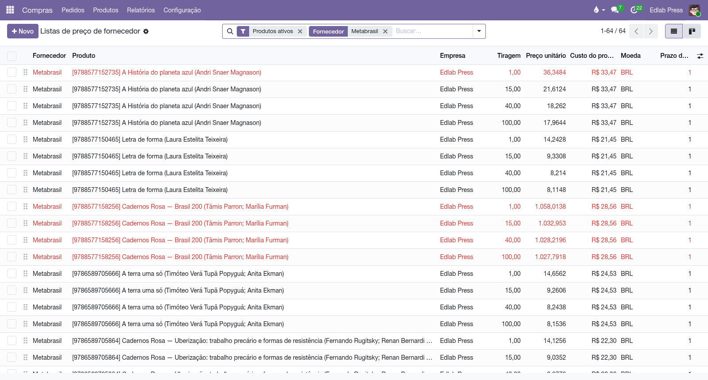

O pedido do cliente vira tiragem na gráfica e, se você quiser, caixa despachada direto para a casa dele. O Liber conversa com a API PoD da Metabrasil para cotar frete, guardar o preço de impressão por tiragem, enviar o pedido e acompanhar a produção até a entrega — sem estoque parado.
Impressão sob demanda cruza dois eixos que valem ser separados, porque o Liber os trata como coisas diferentes:
Esse segundo eixo não é um campo a preencher: quem responde é a rota do título, e o Liber a lê. O resultado aparece como uma faixa colorida no canto do documento: verde PoD no pedido de compra que abastece o depósito, laranja Dropship quando a caixa vai ao cliente — e a mesma faixa laranja no pedido de venda que originou tudo, para que o par venda↔compra se reconheça de longe. A faixa nasce junto com a solicitação de cotação, antes de qualquer confirmação.
img/doc-liber_metabrasil-dropship.pngO preço de imprimir não é uma consulta que alguém faz na hora: ele já está no banco quando você abre a cotação. Um processo agendado pergunta à gráfica quanto custa cada título em cada tiragem e grava o resultado na lista de preços do fornecedor — o mecanismo nativo do Odoo, com faixas por quantidade. A partir daí, digitar 50 numa linha de compra faz o preço da faixa de 50 aparecer sozinho, sem rede, sem espera.
Na lista de preços do fornecedor, a coluna Tiragem diz a que quantidade cada linha pertence, e a coluna Custo do produto fica ao lado do preço unitário. A linha inteira fica vermelha quando a gráfica cobra mais do que o custo que você carrega no título — o momento em que imprimir sob demanda deixa de compensar. Costuma acontecer nas tiragens de um exemplar, e é justamente aí que a decisão muda.

Os títulos que a gráfica consegue cotar recebem uma etiqueta (por padrão PoD, configurável), e a perdem se a gráfica parar de cotá-los. Como não existe endpoint para perguntar "este livro está no seu catálogo?", um preço que volta é a própria resposta — e a etiqueta é onde ela fica guardada, pronta para filtrar.
Frete tem uma conversa só, e ela é a do próprio Odoo. No pedido de venda: . O Liber pergunta à gráfica quanto custa levar aquela caixa até o CEP do cliente e traz de volta todos os serviços cotados, cada um com transportadora, preço e prazo, numa lista para comparar.
Um deles já vem escolhido — o mais barato, ou o mais rápido, conforme a regra da forma de entrega — e você troca à vontade no campo Transportadora. Trocar não consulta a gráfica de novo: os preços dela se mexem entre duas chamadas, e o número não pode mudar debaixo da sua decisão. A transportadora que ficar escolhida viaja com o pedido até a gráfica, nos códigos de que ela precisa para despachar.
Não existe janela paralela de cotação. Existiu, e ter duas janelas respondendo à mesma pergunta significava que uma delas mentia sempre que a outra era usada.
Dropship existe para quando o estoque está em baixa ou há uma urgência. A mecânica é a rota de dropship do Odoo, aplicada ao livro — e vale conhecer o efeito dela: enquanto o título estiver nessa rota, toda venda dele vai para a gráfica, mesmo com exemplares na prateleira. Por isso o Liber não mexe em rota sozinho: quem coloca um título em dropship é você, deliberadamente, e o lugar natural disso são os títulos que nunca são estocados, só impressos quando alguém compra.
Um título em dropship mostra a faixa Dropship no canto do pedido, e o pedido de impressão que nascer dele aponta de volta para a venda — do lado da venda, o botão Pedidos de impressão leva até ele.
Não há botão de "enviar": confirmar o pedido de compra é enviá-lo. Se a gráfica aceitar, o pedido confirma normalmente e passa a ser acompanhado. Se ela recusar — endereço incompleto, ISBN fora do repositório PoD —, a confirmação é bloqueada com o motivo em português na tela, e o documento continua como solicitação de cotação. Corrija a causa e confirme de novo; reconfirmar é o reenvio.
A consequência prática é que não existe pedido "confirmado porém recusado" para alguém cuidar depois.
Um processo agendado espelha o andamento da gráfica no pedido de compra, numa barra de status: Pedido incluído › Impressão › Expedido › Entregue. Junto com o status vêm o código e o link de rastreio, que pousam no recebimento. Conforme os interruptores de , o Liber ainda pode validar o recebimento sozinho, rascunhar a fatura do fornecedor e avisar o cliente por e-mail quando a tiragem entra em produção e quando chega.
Pedidos que empacam — não aprovados em um dia, não expedidos na data prevista, não entregues no prazo — geram uma atividade para o comprador, em vez de apodrecer em silêncio.
Todo documento do sistema carrega um prefixo na numeração — CO/2026/00001 é um acerto, AT/2026/00042 é um chamado. A lista é a mesma em todos os manuais:
| Prefixo | O que é |
|---|---|
C | Pedido de consignação: o pedido que põe livros na prateleira do cliente — C00001, no lugar do S da venda comum. |
CO/ | Consignação, o documento do acerto: registra o que o cliente vendeu e vira venda — CO/2026/00001. |
CR/ | Retorno de consignação: o documento que pede a devolução dos exemplares da prateleira — CR/2026/00001. |
CA | Auditoria de consignação: reconstrói o saldo da prateleira do cliente pelas notas fiscais e registra o ajuste — CA00001. |
CP/ | Campanha de consignação: o sortimento-alvo por canal — quantos exemplares de cada título as prateleiras devem ter — CP/2026/0001. |
AC/ | Acordo de Consignação: o contrato com a livraria, dono da prateleira — AC/2026/00001. |
COM/OUT/ | A série da remessa de consignação ao cliente, do armazém à livraria — COM/OUT/2026/00001, no espelho do WH/OUT. |
MP/OUT/ | A série das entregas de marketplace (Olist): o pacote de pessoa física, na caixa de despacho própria do depósito — MP/OUT/2026/00001. |
COM/MOV/ | A série dos fluxos internos de prateleira da consignação — COM/MOV/2026/00001. |
COM/IN/ | A série do retorno de consignação, da prateleira ao armazém — COM/IN/2026/00001, no espelho do WH/IN. |
REM/ | Remessa: a nota de simples remessa, sem cobrança — a numeração vem do diário fiscal REM. |
COL/ | Coleta: o lote do pedido de coleta às transportadoras — COL/2026/00001. |
AT/ | Atendimento: o chamado nascido do e-mail comercial — AT/2026/00001. |
MBX/ | O lote de envio de metadados à Metabooks — MBX/2026/00001. |
Impostos de Direitos Autorais/ | O lote da fatura acumuladora do IRRF retido dos autores no mês. |
Royalties entre Empresas/ | O lote da fatura acumuladora de royalties entre as empresas da casa. |
| Do próprio Odoo | |
S | Pedido de venda comum — S00001; o pedido de consignação usa o C no lugar. |
WH/OUT | Entrega comum do armazém: a transferência de saída padrão do Odoo. |
WH/IN | Recebimento do armazém: a transferência de entrada padrão do Odoo. |
Bases antigas guardam transferências nas séries COM/ e RET/, de antes da separação por direção — o histórico não é renumerado.
Manual completo, com busca e as demais páginas: Impressão sob demanda (Metabrasil).